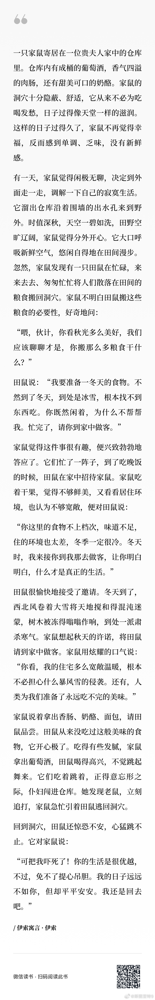

发现亚马逊也开始有口罩现货卖了。

斯图亚特9
2020-05-14
斯图亚特9
2020-05-14
伊索寓言里竟然还有这么一则……
- 
斯图亚特9
2020-05-14
西方国家很大一部分死亡人数都来自于疗养院，这究竟更多的是因为西方疗养院的结构性问题，还是因为新冠感染的人本来就是老年和已有慢性疾病的更容易死亡？
斯图亚特9
2020-05-14
那个比亚迪口罩的事情，比起自媒体借机炒作，作为住在加州的人，我们才是真正担忧的。本来想的好好的这个单签下了，加州医护人员的口罩问题就永久解决了，多好啊。现在又横生枝节了。NIOSH认证拿不到就是得不到永久的在美国的授权。现在比亚迪有FDA的紧急授权。但“紧急使用授权”（EUA  网页链接）说的是用途紧急，而不是授权紧急。即核准的物资更不上的情况下可以使用的未批准物资。听名字就知道最终紧急授权都是会被取消的。国内粉红自媒体形容说卸磨杀驴。话很难听但至少说了个事实就是授权早晚会收回，只是时间问题。FDA不可能永久降低医用N95口罩的监管标准。比亚迪的口罩拿不到永久授权，真要是紧急授权取消了，加州医护的口罩怎么办？继续全球竞拍骗子满天飞的媒体称作“Wild West”的状况吗？这可是加州州长顶住压力付了10亿美元现金，3.3美元一个口罩的价格订的单子，加州已经有反对派议员在开骂了。如果加州医护的口罩问题永久解决了，那这个钱好说，要是解决不了这事就变得很糟糕。现在这事还真不知道该怎么办了。所以作为加州居民，我真心希望比亚迪口罩可以拿到NOISH的紧急授权。搞不定加州解禁都会受影响呢。
网页链接）说的是用途紧急，而不是授权紧急。即核准的物资更不上的情况下可以使用的未批准物资。听名字就知道最终紧急授权都是会被取消的。国内粉红自媒体形容说卸磨杀驴。话很难听但至少说了个事实就是授权早晚会收回，只是时间问题。FDA不可能永久降低医用N95口罩的监管标准。比亚迪的口罩拿不到永久授权，真要是紧急授权取消了，加州医护的口罩怎么办？继续全球竞拍骗子满天飞的媒体称作“Wild West”的状况吗？这可是加州州长顶住压力付了10亿美元现金，3.3美元一个口罩的价格订的单子，加州已经有反对派议员在开骂了。如果加州医护的口罩问题永久解决了，那这个钱好说，要是解决不了这事就变得很糟糕。现在这事还真不知道该怎么办了。所以作为加州居民，我真心希望比亚迪口罩可以拿到NOISH的紧急授权。搞不定加州解禁都会受影响呢。